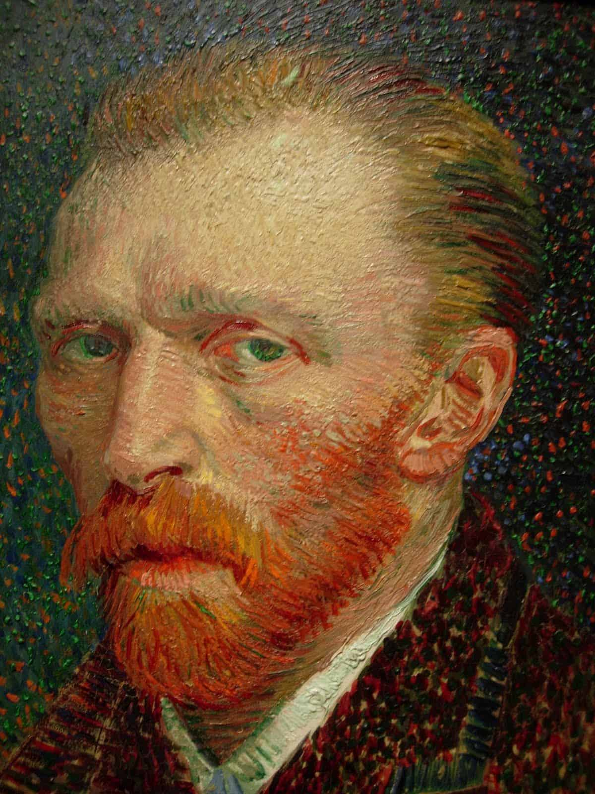
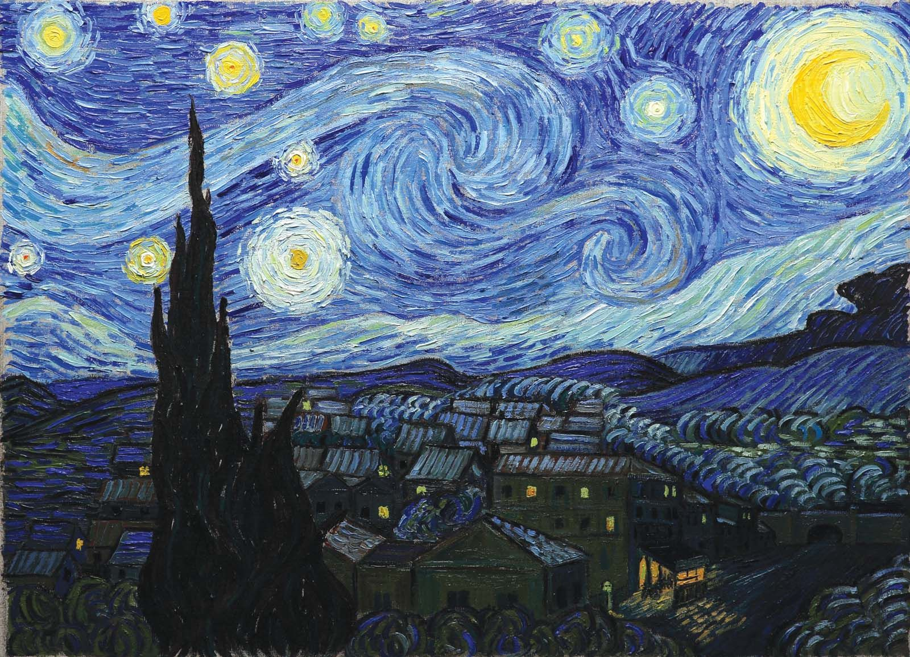
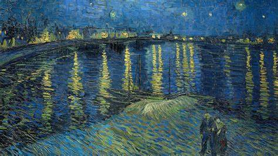

Van Gogh
"Mauve me censurava por ter
dito: 'Eu sou um artista'. Mas não me retrato, porque é evidente que essa palavra carrega
de modo implícito o significado de procurar sempre sem encontrar jamais a perfeição. É precisamente
o contrário de já sei, já encontrei. Eu busco, eu persigo e o faço com todo meu coração". -Vincent Van Gogh-

QUEM FOI VINCENT VAN GOGH?
Van Gogh (1853-1890) foi um pintor holandês do final do século XIX e um dos maiores expoentes do pós-impressionismo.
Seus trabalhos foram valorizados depois de sua morte e tiveram grande influência na arte do século seguinte, sobretudo na vertente expressionista.
Foi um homem intenso, que usava a arte como ferramenta de sobrevivência em meio a uma agitada e instável saúde emocional e psicológica.
É considerado um verdadeiro gênio da pintura. Teve uma carreira relativamente curta como pintor, cerca de dez anos.
Entretanto, produziu uma enorme quantidade de telas, pois trabalhava incessantemente, nos deixando um legado impressionante e carregado de paixão.
Van Gogh começou a pintar relativamente tarde.
Aos 27 anos e era principalmente um autodidata. As suas primeiras pinturas
não são as telas coloridas com as quais a maioria das pessoas está familiarizada.
Quando começou a pintar, ele usou uma paleta de cores pastel e pintou algumas das duras realidades da vida.
Pobreza e dificuldades financeiras foram um tema comum em muitos dos seus primeiros trabalhos.

